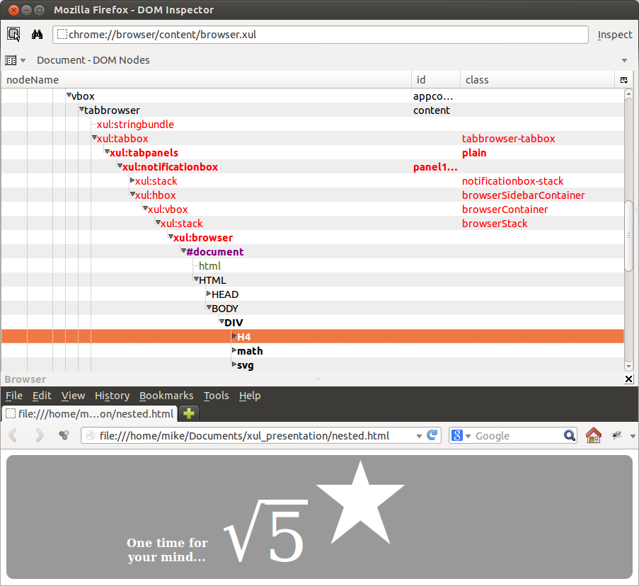
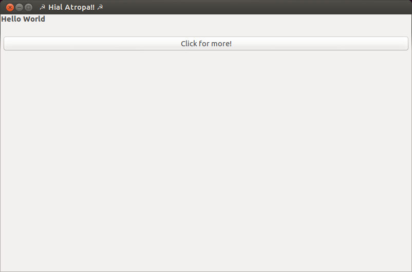
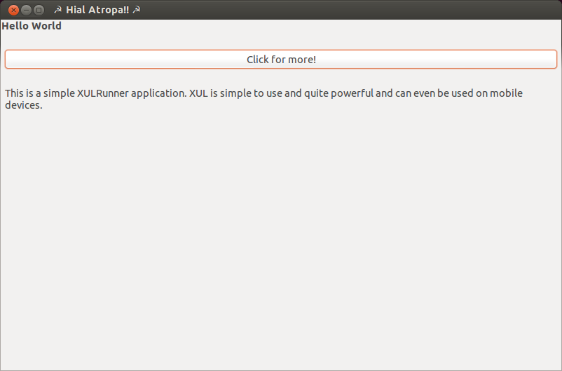
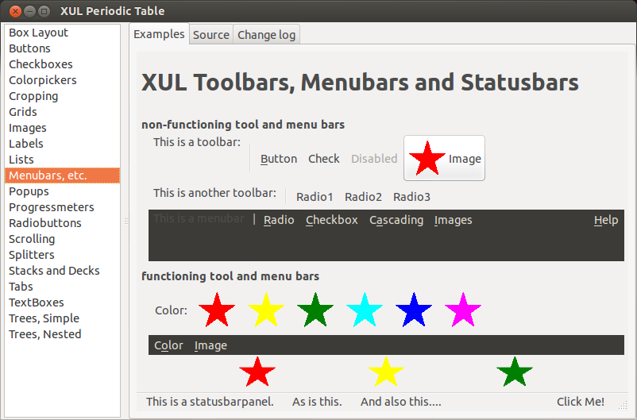
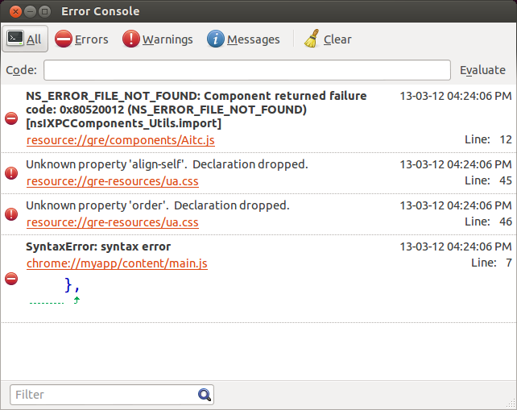
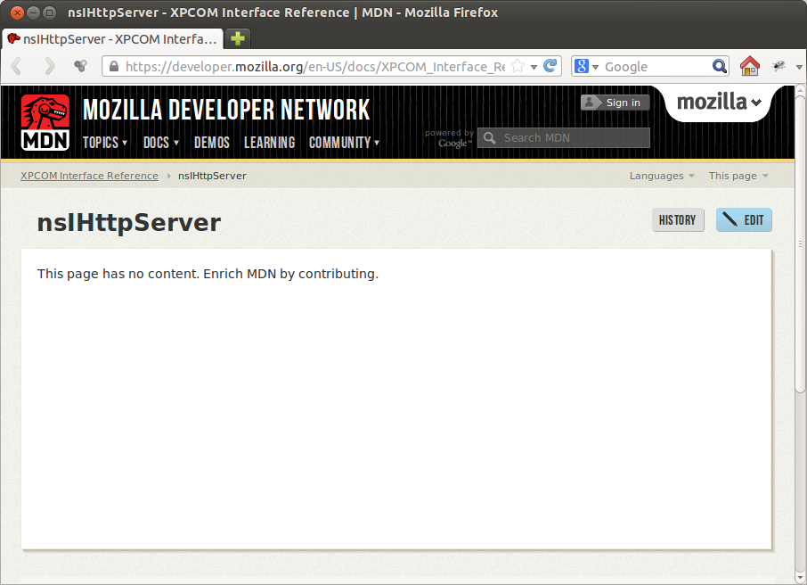

There is no data, only XUL
An intro to Mozilla's XML User Interface Language
<!DOCTYPE html>
<html lang='en'>
<head>...</head>
<body>
<div>
<h4>One time for your mind...</h4>
<math xmlns='http://www.w3.org/1998/Math/MathML'>
<msqrt><mn>5</mn></msqrt>
</math>
<svg xmlns="http://www.w3.org/2000/svg" version="1.1">
<polygon points="100,10 40,180 190,60 10,60 160,180" transform="scale(0.7)"></polygon>
</svg>
</div>
</body>
</html>
The Gecko layout engine

# https://developer.mozilla.org/en-US/docs/XUL/XUL_controls
<window></window>
<button />
<checkbox />
<colorpicker />
<menupopup></menupopup />
<datepicker />
<label />
<progressmeter />
...
# And the big one:
<browser />
<button oncommand="myfunction()"/>
git clone git://github.com/matthewkastor/XULRunner-Examples.git
find XULRunner-Examples/helloWorld/
XULRunner-Examples/helloWorld/
XULRunner-Examples/helloWorld/chrome.manifest
XULRunner-Examples/helloWorld/README.txt
XULRunner-Examples/helloWorld/helloWorld.bat
XULRunner-Examples/helloWorld/chrome
XULRunner-Examples/helloWorld/chrome/content
XULRunner-Examples/helloWorld/chrome/content/hello.xul
XULRunner-Examples/helloWorld/chrome/content/main.js
XULRunner-Examples/helloWorld/helloWorld - ff.bat
XULRunner-Examples/helloWorld/helloWorld.exe
XULRunner-Examples/helloWorld/application.ini
XULRunner-Examples/helloWorld/helloWorld with jsconsole.bat
XULRunner-Examples/helloWorld/defaults
XULRunner-Examples/helloWorld/defaults/preferences
XULRunner-Examples/helloWorld/defaults/preferences/prefs.js
cat XULRunner-Examples/helloWorld/chrome/content/hello.xul
<?xml version="1.0"?>
<?xml-stylesheet href="chrome://global/skin" type="text/css"?>
<window title="☭ Hial Atropa!! ☭"
xmlns:html="http://www.w3.org/1999/xhtml"
xmlns="http://www.mozilla.org/keymaster/gatekeeper/there.is.only.xul"
width="800px"
height="500px">
<script type="application/javascript" src="chrome://myapp/content/main.js"/>
<caption label="Hello World"/>
<separator/>
<button label="Click for more!" oncommand="showMore();"/>
<separator/>
<description id="more-text" hidden="true">
This is a simple XULRunner application. XUL is simple to use and quite powerful and can even be used on mobile devices.
</description>
</window>
function showMore() {
document.getElementById("more-text").hidden = false;
}
# get XULRunner from ftp.mozilla.org/pub/mozilla.org/xulrunner
# Look in releases/19.0.2/runtimes/
./xulrunner XULRunner-Examples/helloWorld/application.ini


# Explore XUL on your own:
# https://developer.mozilla.org/en-US/docs/XUL/XUL_Reference
# Also lots of working examples are include here:
./xulrunner XULRunner-Examples/XULPeriodicTable/application.ini

Mozilla as a platform
The XULRunner engine includes the core Gecko rendering engine (the code that
does all the drawing), along with several key technologies:
- The Cross-Platform Component Model (XPCOM)
- Networking support
- Document Object Model (DOM) editing
- Cryptography
- The XML Bindings Language (XBL)
- XUL
- Scalable Vector Graphics (SVG)
- XSLT
- XML supporting technologies (DOM Inspector, XMLHttpRequest, etc.)
- SOAP services
- Toolbar find-ahead
- Accessibility
- History implementation
Kenneth C. Feldt - Programming Firefox (O'Reilly 2007)
Tips for working with XULRunner
#
# Firefox is a XULRunner application.
#
# Every install of Firefox has its own XULRunner.
# Borrow it!
firefox -app ~/projects/XULRunner-Examples/helloWorld/application.ini
#
# In XULRunner no one can hear your javascript scream.
#
firefox -app application.ini -jsconsole

#
# Set your prefs
#
# defaults/preferences/prefs.js
//What should be in the window when the application launches:
pref("toolkit.defaultChromeURI", "chrome://ffkiosk/content/main.xul");
/* debugging prefs */
//enable the mozilla equivalent of puts: dump()
pref("browser.dom.window.dump.enabled", true);
//send error messages to the console:
pref("javascript.options.showInConsole", true);
//complain about non-standard js
pref("javascript.options.strict", true);
/* don't leave these in a production app */
//ensure that window contents are read from disk each time:
pref("nglayout.debug.disable_xul_cache", true);
//disable fastloading
pref("nglayout.debug.disable_xul_fastload", true);
#
# Where chrome URLs come from: chrome.manifest
#
# Each line has the format:
# type_of_content name_of_package path(relative to chrome dir)
#
#cat XULRunner-Examples/helloWorld/chrome.manifest
content myapp file:chrome/content/
<script src="chrome://myapp/content/main.js"/>
#cat ffkiosk/chrome/chrome.manifest
locale branding en-US chrome/locale/branding/
content ffkiosk content/*
skin ffkiosk default/ ffkiosk/skin/
<?xml-stylesheet href="chrome://ffkiosk/skin/main.css" type="text/css" ?>
<script src='chrome://ffkiosk/content/jquery-1.7.2.js' ></script>
<script src='chrome://ffkiosk/content/io.js' ></script>
<script src='chrome://ffkiosk/content/main.js' ></script>
Cross Platform Component Object Model (XPCOM)
A set of cross platform libraries that form the base of the Mozilla platform.
https://developer.mozilla.org/en-US/docs/XPCOM_Interface_Reference
- nsIWifiAccessPoint
- nsIWifiMonitor
- nsICookieService
- nsICookieStorage
- nsICrashReporter
- nsICryptoHMAC
- nsICryptoHash
- nsICurrentCharsetListener
- nsICycleCollectorListener
- nsIDBChangeAnnouncer
- nsIDBChangeListener
|
- nsIDNSListener
- nsIDNSRecord
- nsIDNSRequest
- nsIXmlRpcClient
- nsICommandLineHandler
- nsIUpdateChecker
- nsIThreadManager
- nsIThreadObserver
- nsIThreadPool
- nsIFile
- nsIFileInputStream
|
/*
* Accessing XPCOM components from Javascript
* Using Mozilla's XPConnect interface:
*/
var Cc = Components.classes;
var Ci = Components.interfaces;
var filePicker = Cc["@mozilla.org/filepicker;1"]
.createInstance(Ci.nsIFilePicker);
var networkLinkService = Cc["@mozilla.org/network/network-link-service;1"]
.getService(Ci.nsINetworkLinkService);
var observerService = Cc["@mozilla.org/observer-service;1"]
.getService(Ci.nsIObserverService);

#
# The best documentation is still Firefox.
#
tar -xjf firefox-19.0.2.source.tar.bz2
cd mozilla-release
grep -ri nsIHttpServer .
// Playing with observers is interesting.
// Modifying XULRunner-Examples/helloWorld/chrome/content/main.js
function showMore() {
document.getElementById("more-text").hidden = false;
var Ci = Components.interfaces;
var Cc = Components.classes;
var observerService = Cc["@mozilla.org/observer-service;1"].getService(Ci.nsIObserverService);
observerService.addObserver(myObserver, "*", false);//observe all events
}
var myObserver = {
observe: function(aSubject, aTopic, aData){
dump("Subject: " + aSubject + "\tTopic: " + aTopic + "\tData: " + aData + "\r\n" );
}
}
Subject: null Topic: cycle-collector-forget-skippable Data: null
Subject: null Topic: cycle-collector-forget-skippable Data: null
Subject: null Topic: cycle-collector-begin Data: null
Subject: null Topic: user-interaction-active Data: null
Subject: [object XMLDocument] Topic: document-element-inserted Data:
Subject: [xpconnect wrapped nsISupports] Topic: network:link-status-changed Data: down
Subject: null Topic: user-interaction-active Data: null
Subject: null Topic: cycle-collector-forget-skippable Data: null
Subject: null Topic: cycle-collector-forget-skippable Data: null
Subject: null Topic: cycle-collector-begin Data: null
Subject: null Topic: user-interaction-inactive Data: null
Subject: [xpconnect wrapped nsISupports] Topic: network:link-status-changed Data: up
Subject: null Topic: user-interaction-active Data: null
Subject: null Topic: user-interaction-active Data: null
!!! xml
<?xml-stylesheet href="chrome://ffkiosk/skin/main.css" type="text/css" ?>
%window{
id: "main",
title: "ffkiosk",
onload: "onload();",
sizemode: "fullscreen",
height: "768",
width: "1024",
xmlns: "http://www.mozilla.org/keymaster/gatekeeper/there.is.only.xul"
}
%script{type: "application/javascript", src: "chrome://ffkiosk/content/jquery-1.7.2.js"}
%script{type:"application/javascript", src: "chrome://ffkiosk/content/io.js"}
%script{type: "application/javascript", src: "chrome://ffkiosk/content/main.js"}
%toolbar
%toolbaritem
%toolbarbutton{label: "I'm a button"}/
%toolbaritem
%toolbarbutton{label:"Foo", type:"menu-button"}
%menupopup
%menuitem{label: "Bar"}/
%menuitem{label: "Baz"}/
%browser{id: "browser", type: "content-primary", flex: "1"}/
Questions?
My XUL application: git://github.com/sleepycat/ffkiosk.git